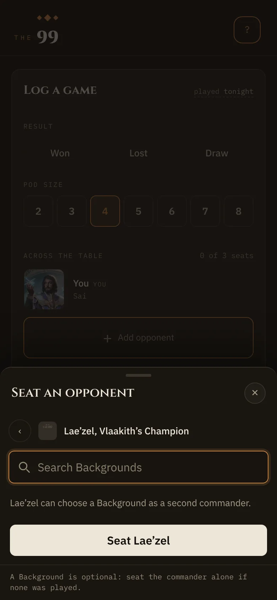
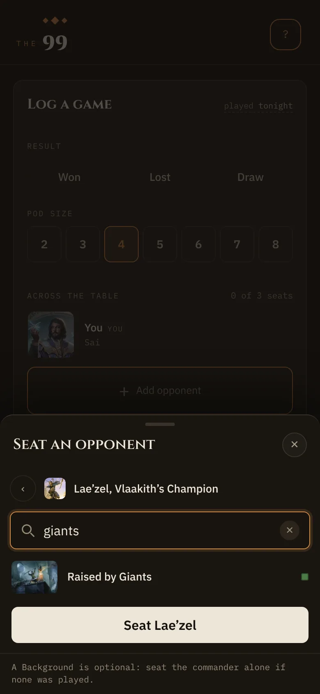
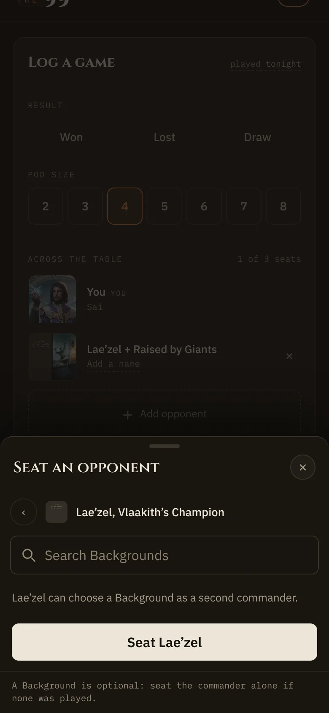
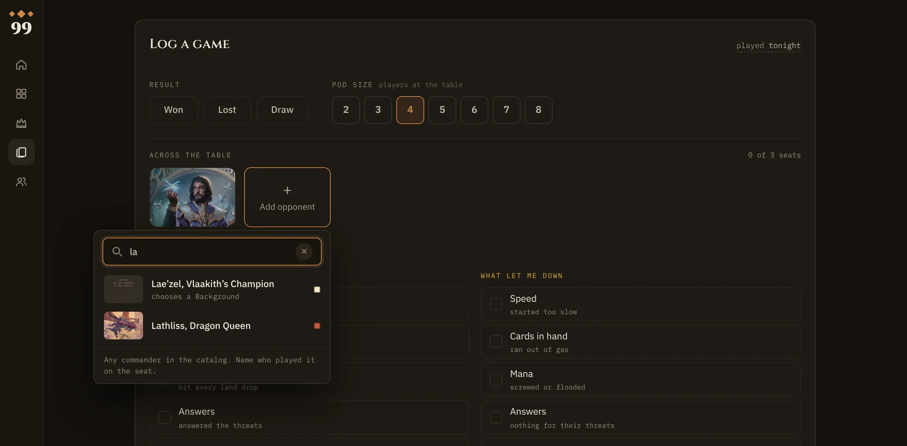
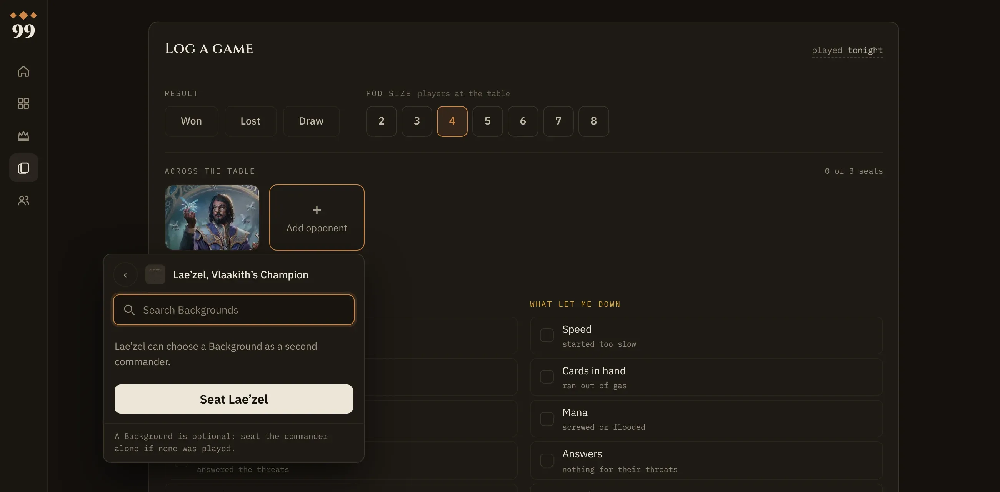
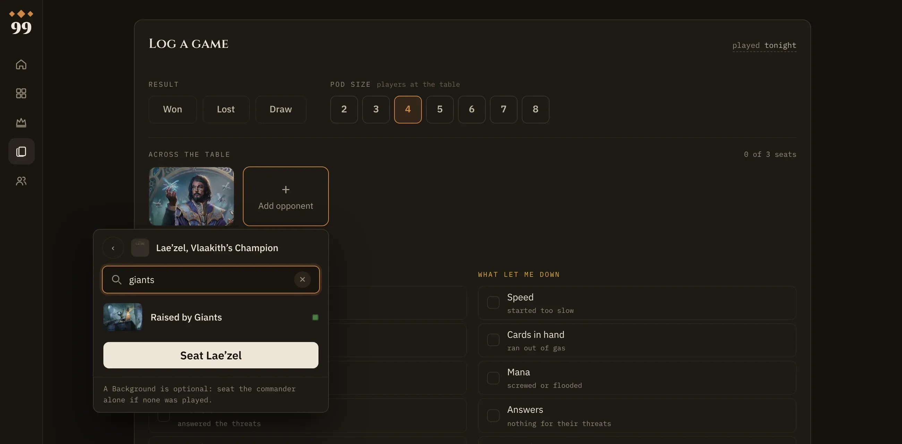
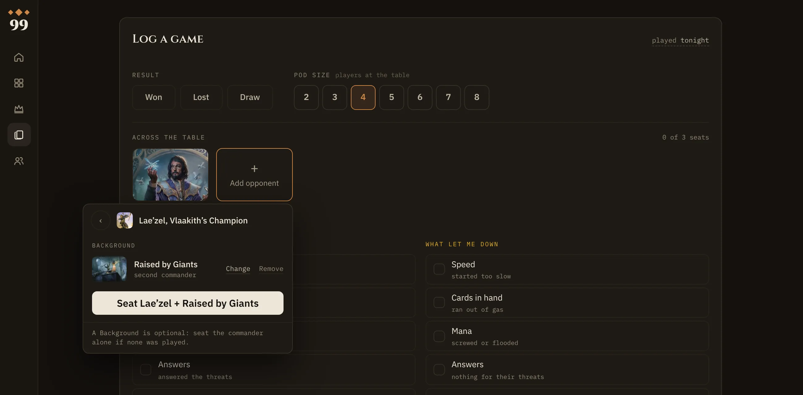
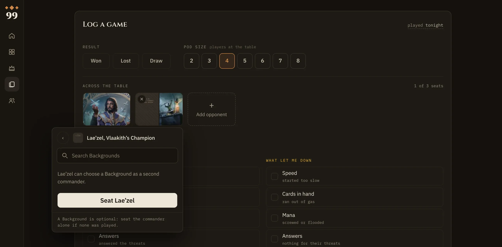

The picker's Background step
Phone draws the shipped sheet; desktop the shipped panel anchored under Add opponent (or under the seat being changed). Same body at both widths.

P1 · Search results
Type “la”: Lae’zel carries chooses a Background; Lathliss seats at once.

P2 · The empty slot
‹ back to commanders, the commander, the search, the rule line, Seat Lae’zel.

P3 · A result row
“giants”: Raised by Giants, as a commander row draws it.

P4 · Chosen
BACKGROUND, the row captioned second commander, Change · Remove. Seat names the pair.

P6 · Removed
The pair's seat reopened on its step, Remove pressed: the slot is a search again, Seat Lae’zel.

P5 · Seated
Back on the form (see Row).

D1 · Search results
The anchored panel, 340 wide.

D2 · The empty slot

D3 · A result row

D4 · Chosen

D5 · Removed
Reopened from the seat, Remove pressed.